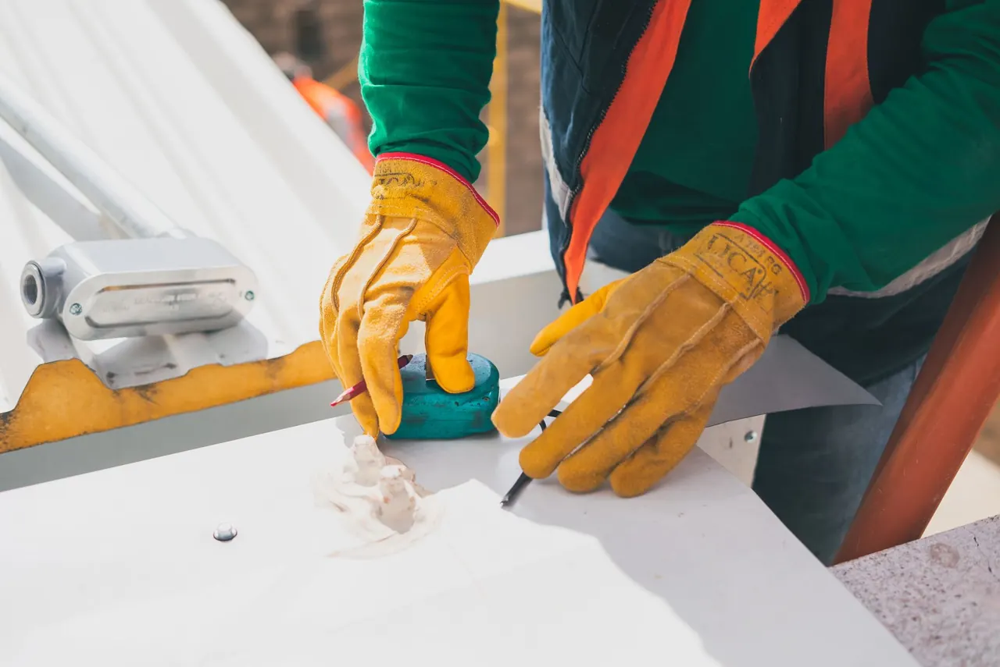
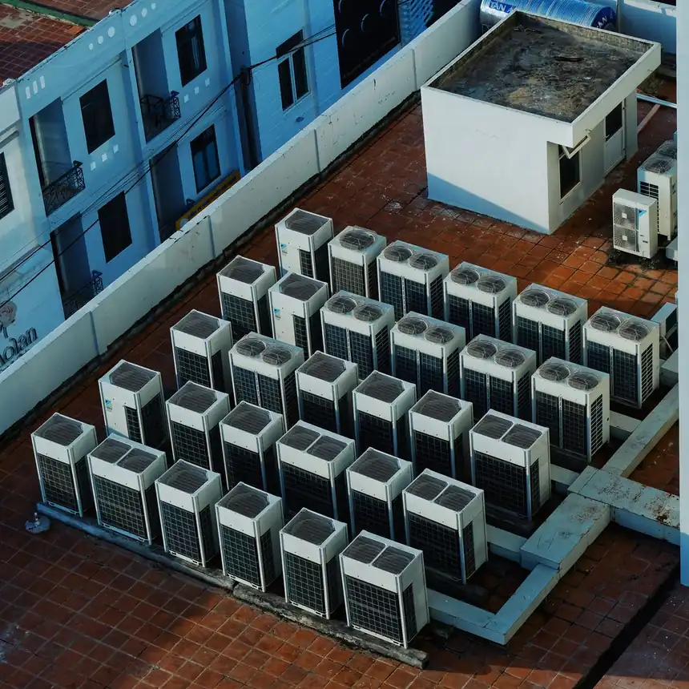

Focused arrival windows
Useful updates and clear arrival timing.

Roofing in Bunkers Cove is essential for maintaining the integrity of your home. Our skilled Bunkers Cove roof contractor offers a range of services, ensuring your roof remains in top condition. From installations to repairs, we are here to help.
Useful updates and clear arrival timing.
Review the approach and price before deciding.
Equipped vehicles and respectful cleanup.
Neighbors serving neighbors with follow-through.
Roofing in Bunkers Cove is vital for homeowners looking to protect their investments. With a unique coastal climate, roofs in this area face specific challenges like high humidity and storm damage. Our Bunkers Cove roof contractor has been serving this community for over 15 years, providing reliable roofing services. We understand the local building codes and the best materials for the job, ensuring long-lasting results. Our team is dedicated to delivering quality work tailored to the needs of Bunkers Cove residents, from Bunkers Cove Estates to Bunkers Cove Park.

Roofing demand in Bunkers Cove is driven by the area's unique weather patterns and high property values. Our roof contractor in Bunkers Cove is equipped to handle a variety of roofing needs, including emergency roofing services in Bunkers Cove.
Our roof installation services in Bunkers Cove cater to new constructions and replacements. We use high-quality materials like GAF asphalt shingles and metal sheets to ensure durability.
View service →02For aging roofs in Bunkers Cove, our roof replacement services provide a fresh start. We assess the condition and recommend the best materials for long-lasting protection.
View service →03Our roof repair services in Bunkers Cove address issues like leaks and missing shingles. We quickly diagnose problems and provide effective solutions to protect your home.
View service →04Regular roof inspections are crucial in Bunkers Cove to identify potential issues early. Our team conducts thorough evaluations to ensure your roof is in optimal condition.
View service →05We offer preventative roof maintenance plans in Bunkers Cove to extend the life of your roof. Regular maintenance helps avoid costly repairs and ensures your roof remains sound.
View service →06Our flat roofing services in Bunkers Cove are ideal for commercial properties. We use durable materials and techniques to ensure proper drainage and longevity.
View service →07Shingle roofing services in Bunkers Cove are popular for their aesthetic appeal and durability. We offer a range of styles to match your home's design.
View service →08Tile roofing services in Bunkers Cove provide a unique look and excellent durability. Our team installs various tile options to enhance your home's curb appeal.
View service →09Metal roofing services in Bunkers Cove offer longevity and energy efficiency. We install high-quality metal roofs that withstand the coastal climate.
View service →Roofing in Bunkers Cove is executed with a focus on quality and compliance. Our Bunkers Cove roof contractor adheres to the Florida Building Code, ensuring all installations and repairs meet local regulations. The coastal climate demands durable materials, so we use trusted brands like Owens Corning and CertainTeed. Scheduling is flexible to accommodate homeowner needs, and we ensure safe access to all job sites. Our team is experienced in navigating the unique challenges of Bunkers Cove, including limited parking and tight spaces.
High humidity can lead to faster deterioration of roofing materials, causing issues like mold and leaks. We use moisture-resistant materials and provide regular maintenance to combat humidity effects.
Storms can cause significant damage, leading to emergency repairs and increased costs. Our team is prepared for emergency roofing in Bunkers Cove, offering quick response times to minimize damage.
Strict local codes can complicate roofing projects, requiring careful planning and execution. We stay updated on all regulations to ensure compliance and avoid delays in service.
This code ensures that all roofing materials and installations meet safety and durability standards, crucial for Bunkers Cove's coastal environment.
Being NRCA certified means our roofing practices adhere to industry standards, ensuring quality workmanship for every project.
Bunkers Cove's coastal climate presents unique challenges for roofing. Homeowners often face specific issues that require attention from a qualified roof contractor.
Heavy rains can overwhelm roofing systems, leading to leaks and water damage inside homes. We conduct thorough inspections and use high-quality materials to ensure roofs can withstand heavy rainfall.
The humid climate encourages moss growth, which can damage shingles and lead to leaks. Our cleaning services remove moss and include treatments to prevent regrowth.
Extreme temperature fluctuations can cause shingles to curl and crack, reducing their effectiveness. We recommend regular inspections to catch these issues early and suggest timely replacements.
Improperly installed or damaged flashing can lead to leaks at vulnerable points on the roof. We ensure flashing is installed correctly and conduct regular checks to maintain its integrity.

Roofing in Bunkers Cove typically ranges from $180 to $450 per square, depending on the materials and complexity of the job. Factors such as storm damage or the need for emergency roofing services in Bunkers Cove can increase costs. It's essential to get a detailed estimate before starting any project.
Higher-quality materials like metal or tile will increase the overall cost but provide longer-lasting results.
Complex roofs with multiple slopes or features require more labor and time, increasing the total price.
Emergency roofing services often come with a premium due to the urgency and materials required for quick fixes.
Navigating Bunkers Cove is easy for our team due to prominent landmarks. We often use these locations as reference points when servicing the area.
The marina is a central point for the community, and our team frequently services homes nearby, ensuring quick access.
Located near many residential areas, we can quickly reach homes in need of roofing services in this neighborhood.
This upscale neighborhood is known for its beautiful homes, making our roofing services essential for maintaining property values.
The community center serves as a hub for local events, and we often provide roofing services to nearby residents.
The boat ramp attracts many visitors, and we ensure that local homes are well-protected from the elements in this area.
This area is a commercial hub, and we provide roofing services to businesses looking to maintain their properties.
This commercial area sees a high demand for roofing services as businesses seek to maintain their properties.
With many waterfront properties, roofing services are crucial for protecting investments from moisture and storm damage.
This main road provides easy access to all neighborhoods, allowing our team to respond quickly to service requests.
Just a short drive away, this highway connects us to Bunkers Cove and surrounding areas for efficient service.
Our roofing services extend throughout Bunkers Cove, covering various neighborhoods that each have unique characteristics.
Bunkers Cove Estates features beautiful homes that require quality roofing solutions to maintain their value. Our team is familiar with the specific needs of this neighborhood. We are just a short drive away, ensuring quick response times.
Bunkers Cove Park is known for its family-friendly atmosphere. We provide reliable roofing services to keep homes safe and secure. Our team can reach this area within minutes for any roofing emergencies.
Bayside homeowners often seek durable roofing solutions due to the coastal elements. We specialize in materials that withstand harsh weather. Located nearby, we can quickly respond to service requests.
Northshore has many older homes that require regular maintenance. Our roofing services help preserve these properties. Our team is familiar with the area, ensuring timely service.
Our case studies highlight the successful roofing projects we've completed in Bunkers Cove, demonstrating our expertise and commitment to quality.
Severe storm damage to a residential roof We quickly assessed the damage and provided emergency roof repairs using durable materials, restoring the roof's integrity. The homeowner was pleased with the swift response, and the repairs were completed within 24 hours.
Aging roof with leaks in multiple areas We conducted a thorough inspection and recommended a complete roof replacement with high-quality asphalt shingles. The new roof significantly improved the home's energy efficiency and aesthetic appeal.
Moss growth on a roof causing damage We provided a roof cleaning service followed by preventative maintenance to inhibit future growth. The roof's lifespan was extended by several years, saving the homeowner future repair costs.
Bunkers Cove experiences distinct seasonal changes that impact roofing needs. Understanding these changes can help homeowners prepare for potential issues.
Spring brings heavy rains that can cause leaks if roofs are not properly maintained. It's essential to check for any damage after winter.
The summer heat can cause shingles to deteriorate faster, leading to potential leaks and increased energy costs.
Fall can bring strong winds that may dislodge shingles or cause debris to accumulate on roofs.
Winter storms can bring heavy snow and ice, leading to ice dams and leaks.
Our roofing services extend beyond Bunkers Cove to several nearby cities, ensuring comprehensive coverage for all roofing needs.

Located just a few miles from Bunkers Cove, we frequently serve homeowners in St. Andrews.
Local coverage and detailsAs a bustling area, we often provide roofing services to businesses and homes in Downtown Panama City.
Local coverage and details
Millville is close to Bunkers Cove, making it easy for us to respond quickly to service requests.
Local coverage and details
Just a short drive from Bunkers Cove, we cater to the roofing needs of residents in Downtown North.
Local coverage and detailsWhen hiring a roofing contractor in Bunkers Cove, asking the right questions can help you find a qualified professional. Here are key questions to consider.
Experience with local conditions and regulations ensures the contractor can handle specific challenges in the area.
References provide insight into the contractor's reliability and quality of work.
Understanding material options helps you make informed decisions about durability and cost.
A good contractor should have a clear plan for addressing unforeseen problems to minimize delays.
Warranties provide peace of mind, ensuring that the contractor stands behind their work.
Lic. #123456
Lic. #654321
GAF
CertainTeed
$2M general liability
member
sponsor
The best roofing services in Bunkers Cove include roof installation, repair, and maintenance tailored to the local climate and building codes.
Roofing costs in Bunkers Cove typically range from $180 to $450 per square, depending on materials and project complexity.
Look for experience, local references, and proper licensing when choosing a roofing contractor in Bunkers Cove.
Most roofing projects in Bunkers Cove take 1-3 days, depending on the size and complexity of the job.
Call a roof contractor in Bunkers Cove if you notice leaks, missing shingles, or any signs of roof damage.
Not seeing your question? Our local team can help you understand urgency, scheduling and what to expect.
Ask the local team
We invite you to reach out for any roofing needs. Our team is available to assist you promptly, ensuring a quick response.